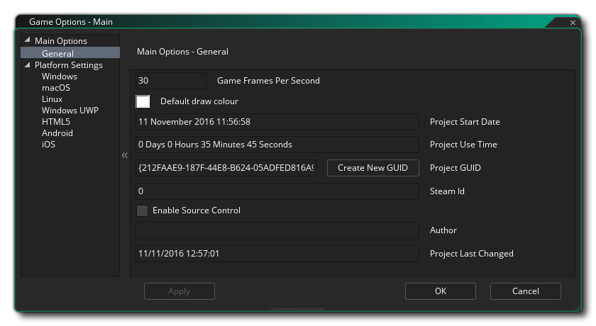
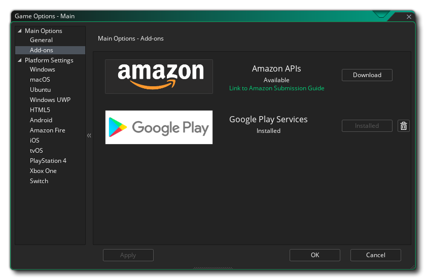

The Game Options are split into two sections, Main Options and the Platform Settings. Details of the Main Options are given in the sections below:

The General Options window is where you can set certain things that will affect the game regardless of the platform that it is being designed to run on. The window has the following sections:
- Use DnD™ As default Script Type: When this option is ticked, all new scripts and object events will be open using the DnD™ editor rather than the code editor.
- Game Frames Per Second: This value sets the limit on the number of frames per-second that GameMaker Studio 2 should try to maintain your games when running. This value represents the number of times that the game loop will run in one second (a single game loop is considered a single "frame") and is set to a default value of 60, although 30 is often used too. There are many arguments about which room speed is the ideal, but the actual answer depends on what type of game you are making, the size of the room, the number of instances and how intensive the code is. For example, if you have a large room and a room speed of 30, the game may appear "choppy" as the larger the area you are looking at, the easier it is for the eye to perceive low room speeds, but if the game is intensive then setting the room speed to 120 may cause the game to "lag" as the fps drops due to the amount of processing being done. So take care with this value and try to always adjust it to what your game needs.
- Default Draw Colour: The default colour for drawing text or forums (and other things) when no colour has been set using code.
- Generate Project Images: Clicking this will open the Project Image Generator tool.
- Project Start Date: The date that the project was initiated.
- Project Use Time: The length of time that has passed since you initiated the project.
- Project GUID: This is the unique identifier that is created for each project within GameMaker Studio 2. If you wish to change this you can click the Create New GUID button to generate a new one.
- Generate mipmaps for separate texture pages: This option will have GameMaker Studio 2 create mipmaps for those sprites that have flagged the Seperate Texture Page option in the Texture settings of the Sprite Editor. Enabling mipmapping means that the original texture page for the sprite is to be scaled and filtered into multiple resolutions within the texture file. This is normally off, but if you are using views to zoom in or out on large areas of the game room, or you are working with a 3D game, then you may want to enable this and then use the Mipmapping Functions to adjust how the game deals with the different mipmap levels. Note that if you are not flagging sprites as using individual texture pages, you can still enable mipmapping on a per-texture group basis from the Texture Group Manager. This option is off by default.
- Steam ID: If you are creating a game that is to be distributed through Steam, then you need to supply the Steam App ID here. Make sure you have added the path to the Steamworks SDK in the Platform Preferences when using this option, and ensure that you have everything set up correctly on the Steamworks dashboard.
- Allow anonymous Game Statistics: Enable or disable the sending of GameMaker Studio 2 games analytics data to YoYo Games, both from the IDE and the from the games you create. When enabled this will send anonymous data about the PC running the program/game (things like monitor size, CPU, GPU, memory, etc…) and final executables will also send data on what the game is called. This data is being accumulated so that YoYo Games can better target their services towards the needs of the user, and in the future YoYo Games hope to make this data available to developers (much like Steam does with their Steam Software Survey). For full details see part 6 of the section Information Which We Collect of the YoYo Games Privacy Policy. This option is available to those users with a Paid Licence (Desktop, Mobile, HTML5, UWP or Console) only, and users with the Trial Licence will always send anonymous statistical data.
- Enable Source Control: If you wish the project to be under SCM (Source Control Management) then you need to check this. It is off by default (see here for more information on source control).
- Author: The name of the game author (or publisher or studio).
- Project Last Changed: This section simply shows the date/time stamp for the last time that the project was changed (this is not editable).
- Accept Spine Licence: Here you can check the box to be shown the Spine Runtime Licence and accept it. This will permit you to use Spine sprites in your game (this licence will also be shown the first time you try to add a Spine sprite to your project and haven't checked the licence here beforehand).

GameMaker Studio 2 requires certain add-ons to be installed as extensions for your project if you wish to use extended features like leaderboards or in-app-purchases on specific platforms. Clicking the "Download" button will download the extension and install it in the current project for you, ready to use.
The resource tree will also have other Game Options available to you depending on the target platforms that are available for the licence that you have and not all of them may be available or visible. The following platform options exist: